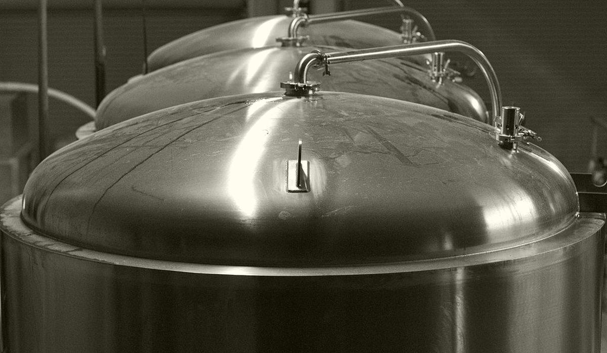

Choosing the blend that hits spec with the most room to spare
Any blend that lands inside spec passes release. The better question is which one lands furthest from the edges and what it leaves behind in the cellar for the next blend.

In spec is not the same as safe
Blending in most cellars is done on a calculator by the person who has done it for years. Pick the tanks that are ready, weight the analyses by volume, check every attribute is inside its limits and send it. It works. It also tends to produce blends that sit a few hundredths from a limit on one attribute, because the first combination that passed was the one used.
A blend near a limit is a blend at risk. The lab result has its own uncertainty, the bright tank will pick up a little oxygen and colour drifts in package. Two blends can both pass release while one has room to absorb all that and the other has none. Choosing between them is a calculation, not a feeling.
The arithmetic, attribute by attribute
Each attribute blends by its own rule. Get the rule wrong and the prediction is wrong before the optimiser starts.
Blend value = sum(V_i x value_i) / sum(V_i)Alcohol by volume is close enough on this rule for beers of similar strength.
OG blend = P( sum(V_i x lbbl(OG_i)) / sum(V_i) )lbbl converts Plato to extract per unit volume; P is its inverse. The Master Brewers rule.
pH blend = -log10( sum(V_i x 10^(-pH_i)) / sum(V_i) )For gravities close together the extract-mass rule and a simple volume average barely differ. Blend 600 hL at 12.0 P with 400 hL at 11.0 P and both give 11.60 P to two decimals. The rule matters more for pH and for widely different worts, such as a high-gravity beer meeting a diluted one.
Then define risk. A practical measure is margin: for each attribute, the distance from the predicted blend value to the nearest spec limit, divided by half the spec width. For a one-sided limit, such as forced VDK, divide the distance by the limit. The lowest-risk blend is the one with the largest worst margin.
A worked choice
Say the spec is ABV 4.8 to 5.2 %, bitterness 18 to 22 BU, colour 7 to 9 EBC and forced VDK no more than 0.10 mg/L. The bright tank needs 1,500 hL. Three fermenters are ready: T1 900 hL at 5.15 %, 21.5 BU, 8.8 EBC, 0.06 mg/L; T2 700 hL at 4.85 %, 18.5 BU, 7.2 EBC, 0.09 mg/L; T3 600 hL at 5.05 %, 20.0 BU, 8.0 EBC, 0.04 mg/L.
| Blend | ABV | BU | EBC | VDK | Worst margin |
|---|---|---|---|---|---|
| A: T1 900 + T2 600 | 5.03 | 20.3 | 8.16 | 0.072 | 0.28, on VDK |
| B: T1 200 + T2 700 + T3 600 | 4.97 | 19.5 | 7.73 | 0.066 | 0.34, on VDK |
| C: T1 900 + T3 600 | 5.11 | 20.9 | 8.48 | 0.052 | 0.45, on ABV |
All three pass. Blend C has the most room on its weakest attribute. But it leaves T2 behind on its own. T2 alone sits 0.5 BU and 0.2 EBC from the bottom of spec. Blend B uses all of T2 now, at a slightly lower worst margin. It leaves T1 700 hL that blends easily later. Lowest risk for this tank and lowest risk for the cellar are different answers. The optimiser should show both.
Where optimisers go wrong
Stale analyses. A fermenter result from three days ago is not the beer going into the blend. Use the latest result and show its age.
Ignoring uncertainty. If the lab repeatability on bitterness is 1 BU, a margin of 0.5 BU is not a margin. Shrink each spec by the measurement uncertainty before computing margins.
Volumes that are not available. Heels, minimum pump-out levels and beer committed to another blend all reduce what can be used. Feed the optimiser real available volume.
Optimising one blend at a time. The best blend today can strand an awkward tank that nobody can place next week. Check what remains.
What good looks like
Good is a short list of candidate blends, each with predicted values, the worst margin and what it leaves in the cellar, for the blender to choose from. The blender still decides. The difference is that the choice is visible. The margin is written down before the beer moves.
Beer365 reads tank volumes and the latest lab results into one record, applies the right blending rule per attribute and ranks candidate blends by margin. Each prediction cites the tanks and the lab results it used.
This article answers one of the fermentation and cellar questions Beer365 is built for.

Written by Ankur Napa
R&D brewer at United Breweries, SABMiller and AB InBev, then a data scientist on AI and generative AI for AB InBev's global business units. MSc Brewing Science and Technology, MSc Data Science and AI, Microsoft Certified Fabric Analytics Engineer. He leads Beer365 at Disruptive Advantage.
Keep reading
More on fermentation and cellar
 Fermentation and cellar
Fermentation and cellarIf one brew is bad, how much beer is affected
A single faulty brew rarely stays single. Fermenters merge brews, bright tanks merge fermenters and heels carry into the next fill. Exposure is a forward trace and it has two answers.
Fermentation and cellarHow much beer dies in cones, heels and transfers
Cellar loss is usually a balancing figure on a monthly report. Measured vessel by vessel it becomes a list of named leaks, most of them owned by a valve and a habit.
Fermentation and cellarAre the cellar temperature ramps actually being followed
A ramp can fail in two places: the setpoint nobody loaded, or the glycol that could not keep up. They look the same on a temperature chart and need opposite fixes.
Bring one week of brew sheets
We will show you where the beer went, on a call, before anyone signs anything.